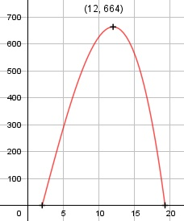

Aufgabe 95 Ein Unternehmen beschreibt seinen Gewinn mit G(x) = -(1/3)x3 + 2x2 + 96x - 200 für x(0;25) a) Bei welcher Stückzahl entsteht der maximale Gewinn? b) Wie hoch ist er? a) G'(x) = -x2 + 4x + 96 G''(x) = -2x + 4 -x2 + 4x + 96 = 0 |*(-1) x2 - 4x - 96 = 0 p, q - Formel: p = -4, q = -96 x1,2 = x1,2 = 2 ± x1,2 = 2 ± x1,2 = 2 ± 10 x1 = 12 ME x2 = -8 keine Lösung G''(12) = -2 * 12 + 4 < 0 --> Hochpunkt b) G(12) = -(1/3)*123 + 2*122 + 96*12 - 200 = 664 GE Der maximale Gewinn beträgt 664 GE.
